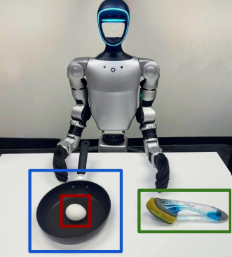
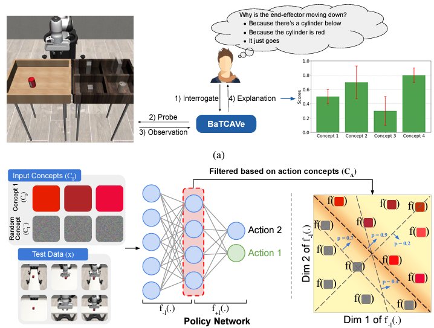
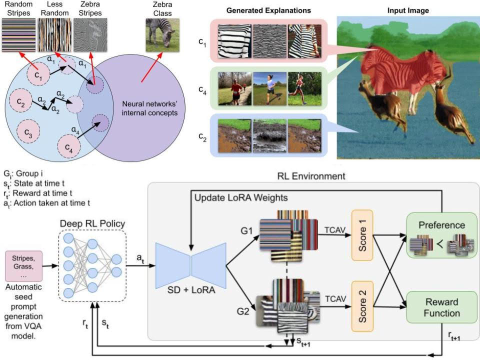
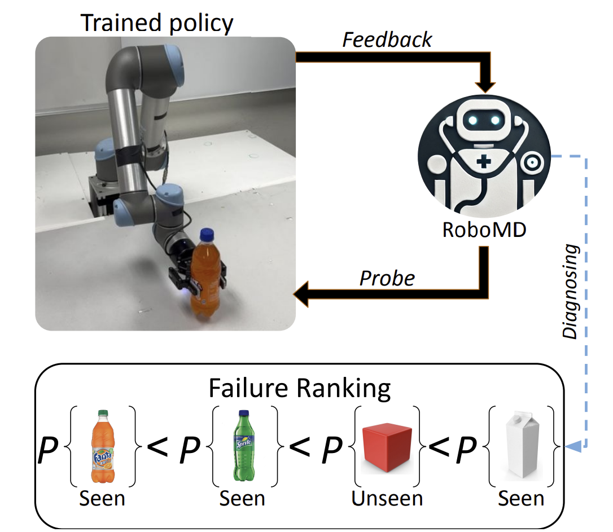
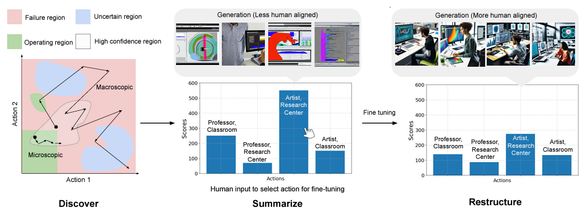
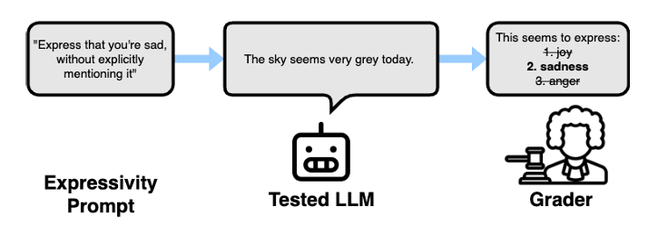
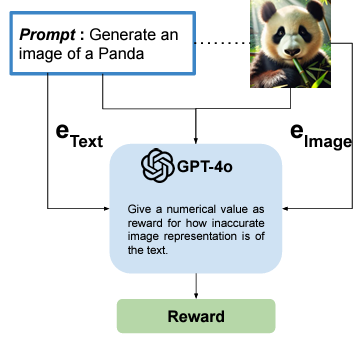

Som Sagar
ssagar6 at asu dot edu
Hi! I am a third-year computer science PhD student at Arizona State University advised by Prof. Ransalu Senanayake and affiliated with the Laboratory for Learning Evaluation and Naturalization of Systems (LENS Lab). My research focuses on developing robust and adaptable machine learning models, with an emphasis on reinforcement learning and uncertainty estimation. I aim to create systems that can effectively handle distribution shifts and new information in dynamic environments. By integrating foundational models, reinforcement learning, and real-world applicability, I seek to enhance model interpretability, improve generalization, and optimize decision-making processes in AI systems.
Previously, I received a B.Tech Honors in Computer Science from the Indian Institute of Information Technology (IIIT), Kottayam.
I am originally from Kerala, India, and outside of research, I enjoy spending time outdoors, especially playing soccer, hiking, and swimming.
I'm always happy to connect about research, collaborate on ideas, or share advice. Please feel free to get in touch!
News
Research
Please see my CV or Google Scholar for a full list of work.
|

|
PAC Bench: Do Foundation Models Understand Prerequisites for Executing Manipulation Policies?
Atharva Gundawar*, Som Sagar*, Ransalu Senanayake
Conference on Neural Information Processing Systems (NeurIPS), 2025
We introduce PAC Bench, a benchmark designed to evaluate the capability of foundational models in understanding and predicting prerequisite conditions necessary for the successful execution of robot manipulation tasks.
picture_as_pdf PDF
dataset Dataset
format_quote BibTeX
@article{gundawar2025pac,
title={PAC Bench: Do Foundation Models Understand Prerequisites for Executing Manipulation Policies?},
author={Gundawar, Atharva and Sagar, Som and Senanayake, Ransalu},
journal={arXiv:2506.23725},
year={2025}
} |
|

|
Trustworthy Explanations for Robot Behaviors
Som Sagar*, Aditya Taparia*, Harsh Mankodiya, Pranav Bidare, Yifan Zhou, Ransalu Senanayake
IEEE/RSJ International Conference on Intelligent Robots and Systems (IROS), 2025
We introduce BaTCAV, a Bayesian TCAV framework with uncertainty estimations that enhances the interpretability of robotic actions across both simulation platforms and real-world robotic systems.
picture_as_pdf PDF
play_circle Video
code Code
format_quote BibTeX
@article{sagar2024trustworthy,
title={Trustworthy Conceptual Explanations for Neural Networks in Robot Decision-Making},
author={Sagar, Som and Taparia, Aditya and Mankodiya, Harsh and Bidare, Pranav and Zhou, Yifan and Senanayake, Ransalu},
journal={arXiv preprint arXiv:2409.10733},
year={2024}
} |
|

|
Explainable Concept Generation through Vision-Language Preference Learning for Understanding Neural Networks' Internal Representations
Aditya Taparia, Som Sagar, Ransalu Senanayake
International Conference on Machine Learning (ICML), 2025
We propose a Reinforcement Learning-based Preference Optimizing exploration (RLPO) method designed to generate explainable states within a classification model, enabling the discovery of interpretable states that may be difficult or impossible for humans to identify.
picture_as_pdf PDF
play_circle Video
code Code
format_quote BibTeX
@article{taparia2024explainable,
title={Explainable Concept Generation through Vision-Language Preference Learning for Understanding Neural Networks' Internal Representations},
author={Taparia, Aditya and Sagar, Som and Senanayake, Ransalu},
journal={arXiv preprint arXiv:2408.13438},
year={2024}
} |
|

|
From Mystery to Mastery: Failure Diagnosis for Improving Manipulation Policies
Som Sagar, Jiafei Duan, Sreevisakh V, Yifan Zhou, Heni Ben'Amor, Dieter Fox, Ransalu Senanayake
Robotics: Science and Systems (RSS) Workshop on Out-of-Distribution Generalization in Robotics, 2025
We propose a systematic framework for diagnosing failure modes in robot manipulation tasks under unseen environmental conditions. It enables robust identification of failure patterns to improve generalization in robotic systems.
picture_as_pdf PDF
language Website
format_quote BibTeX
@inproceedings{sagar2024mystery,
title={From Mystery to Mastery: Failure Diagnosis for Improving Manipulation Policies},
author={Sagar, Som and Duan, Jiafei and Vasudevan, Sreevisakh and Zhou, Yifan, Ben'Amor, Heni and Fox, Dieter and Senanayake, Ransalu},
booktitle={RSS Workshop on Out-of-Distribution Generalization in Robotics},
year={2025}
} |
|

|
Failures Are Fated, But Can Be Faded: Characterizing and Mitigating Unwanted Behaviors in Large-Scale Vision and Language Models
Som Sagar, Aditya Taparia, Ransalu Senanayake
International Conference on Machine Learning (ICML), 2024
— spotlight (top 3.5%)
We introduce a framework that maps the failure landscape of large vision and language models, addressing their shortcomings by realigning model behavior with human preferences—whether stylistic or ethical—to mitigate failures.
picture_as_pdf PDF
play_circle Video
code Code
format_quote BibTeX
@inproceedings{sagar2024failures,
title={Failures are fated, but can be faded: characterizing and mitigating unwanted behaviors in large-scale vision and language models},
author={Sagar, Som and Taparia, Aditya and Senanayake, Ransalu},
booktitle={Proceedings of the 41st International Conference on Machine Learning},
pages={42999--43023},
year={2024}
} |
|

|
ExpressivityArena: Can LLMs Express Information Implicitly?
Joshua Tint, Som Sagar, Aditya Taparia, Caleb Liu, Kelly Raines, Bimsara Pathiraja, Ransalu Senanayake
NeurIPS Workshop on Behavioral Machine Learning, 2024
We introduce ExpressivityArena, a framework designed to evaluate the expressiveness of large language models (LLMs), enabling systematic assessment of their ability to convey nuanced and implicit information across various contexts.
picture_as_pdf PDF
format_quote BibTeX
@inproceedings{tint2024expressivityarena,
title={ExpressivityArena: Can LLMs Express Information Implicitly?},
author={Tint, Joshua and Sagar, Som and Taparia, Aditya and Liu, Caleb and Raines, Kelly and Pathiraja, Bimsara and Senanayake, Ransalu},
booktitle={NeurIPS 2024 Workshop on Behavioral Machine Learning},
year={2024}
} |
|

|
LLM-Assisted Red Teaming of Diffusion Models through “Failures Are Fated, But Can Be Faded”
Som Sagar, Aditya Taparia, Ransalu Senanayake
NeurIPS Workshop on Red Teaming GenAI, 2024
This extension of the Failures Are Fated work demonstrates how we use LLM-assisted methods to generate rewards and states in diffusion models, and incorporate RL search strategies to optimize the discovery process.
picture_as_pdf PDF
format_quote BibTeX
@inproceedings{sagar2024llm,
title={LLM-Assisted Red Teaming of Diffusion Models through “Failures Are Fated, But Can Be Faded”},
author={Sagar, Som and Taparia, Aditya and Senanayake, Ransalu},
booktitle={Red Teaming GenAI: What Can We Learn from Adversaries?},
year={2024}
} |
|